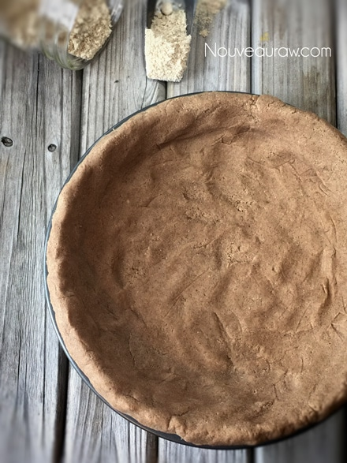
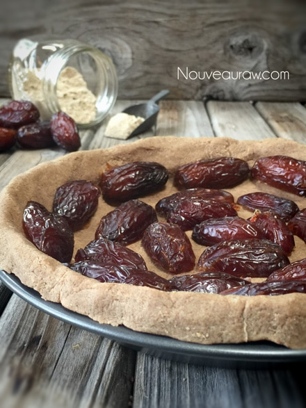
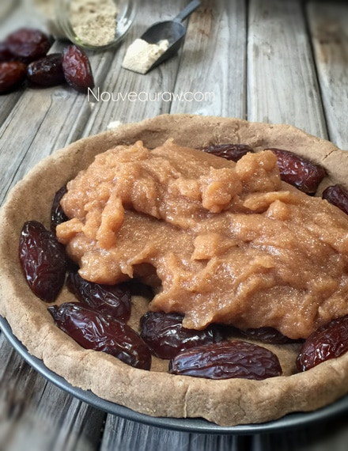
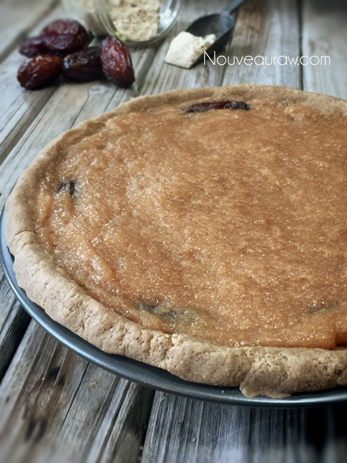
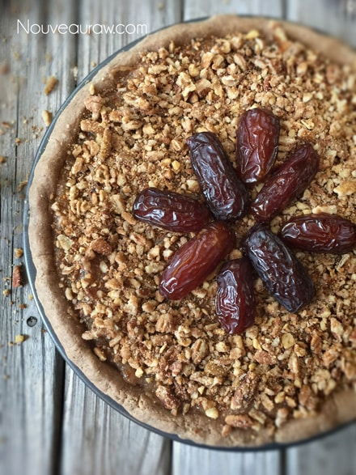
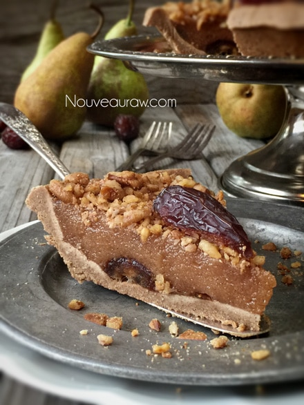
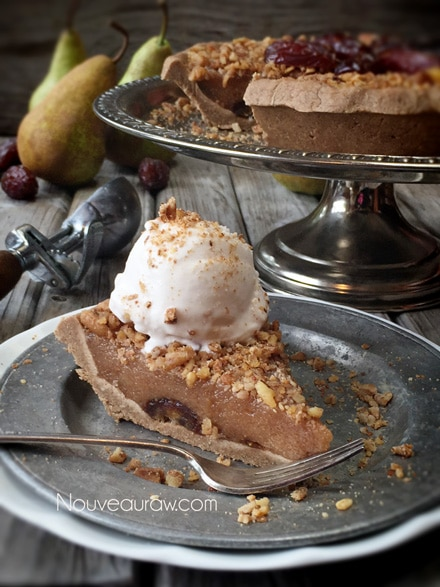
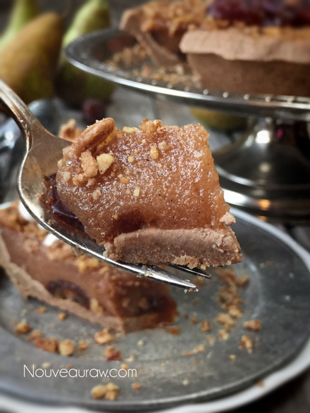
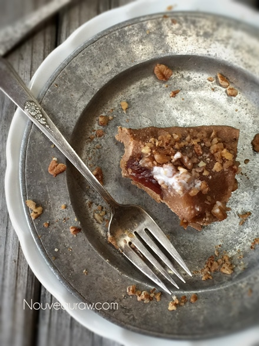

Medjool Date & Pear Praline Pie

~ raw, vegan, gluten-free ~
Medjool Date and Pear Praline Pie… It’s pear season and what a yummy way to use your backyard bounty or the pickings from local orchards! From the fragrant sweet pears to the pronounced caramel-and-molasses flavor of the dates… topped with the sweet pecan crumb topping… I am telling you, it just doesn’t get much better than this.
This pie has become a game-changer for me. I love all the raw cheesecakes and nut-based cakes but never have I achieved a texture as I have in this particular pie. It reminds me of a pecan praline pie which I have admired in the past, but they were often too cloyingly sweet (many recipes use one cup of white sugar AND one cup corn syrup)… those two sweeteners just aren’t in my vocabulary, pantry or belly anymore.
I wanted to create a raw nut-free, grain-free, seed-free, gluten-free, crust that had more of an authentic crust-like look… so I turned to Tiger Nut flour. Which is a tuber that grows in the ground much like potatoes. Please click (here) to learn more about it. For more crust ideas, click (here) to select from some other flavor combinations. If you want to make this pie 100% nut-free, simply omit the pecan topping.
I used my Split Decision 9″ pie pan. It comes with two inserts; a removable base and then an insert that lays on top of that, which allows you to create two different pies in one pan. I have become very spoiled over the years by using Springform pans. To the point that I tend only to use pans that either has removable sides and/or bases. All for the ease of removing, slicing, and serving the dessert. I love that this pan is shaped like the standard pie pan, but the base pops out. Click on the link above to check it out; I think you might get a kick out of it.
To help give this pie some shape and body, I selected psyllium husks to help thicken the filling. Psyllium is a plant-derived soluble fiber, available as coarse “husks” or finely ground. Either one would be fine for this recipe. To learn about some health benefits, click (here). If you are opposed to using it, you can test out Irish moss gel or kelp paste. I would guess at using about 1/4 cup of either one.
Well, it’s time to let you go so you can play in the kitchen and remember… When it comes to eating pie, I say, “Cut my pie into four pieces, I don’t think I could eat eight!”
Yields 9″ pie pan
Crust:
- 2 1/4 cups Tiger Nut flour
- 4 Tbsp water
- 3 Tbsp raw coconut butter, softened
- 3 Tbsp cold-pressed coconut oil, softened
- 3 Tbsp maple syrup
- 1 tsp ground Ceylon cinnamon
- 1/4 tsp Himalayan pink salt
- 12 large Medjool dates, pitted and halved
Filling:
- 2 1/2 cups (570 g or 3 pears) pear puree
- 1 1/2 Tbsp psyllium husks
- 1 Tbsp lemon juice
- 1/2 vanilla bean, seeds only
- 1/4 tsp Himalayan pink salt
Topping (optional):
Preparation:
Crust:
- In the food processor, fitted with the “S” blade, combine the tiger nut flour, water, coconut butter, coconut oil, maple syrup, cinnamon, and salt.
- Process until the dough started to spin in a ball.
- If using a pie pan that has a removable bottom, wrap the bottom piece with plastic wrap. This will aid in the removal of the pie.
- Press the dough into the base and sides of the pan.
- You can make a decorative edge on the crust or make it look more rustic, which was my goal.
- Slide the pan into the dehydrator at 145 degrees (F) for 1 hour, reduce to 115 degrees (F) and continue to dry for 4-6 hours.
- Once done, slice and pit the dates, placing them on the sides and bottom of the crust. See photo below. Set aside.
- Select moist and sticky whole dates. Tough, dry dates will be hard to cut with a fork while enjoying your slice of heaven.
Filling:
- Place the pears in the blender carafe and blend them into a puree.
- Add the psyllium, lemon juice, vanilla seeds, and salt. Blend until well mixed.
- Pour into the pie pan and spread it evenly.
- If you are ok with using nuts, place the pecans and coconut crystals in the food processor and pulse together.
- Spread the mixture over the top of the pie and place in the fridge for 4+ hours to chill and firm up a bit.
- Keep well covered in the fridge for up to 3-4 days.
- To learn more about maple syrup by clicking (here).
- Raw Coconut Crystals add a “brown sugar” flavor to a recipe. Read about it (here).
- Dates are an amazing ingredient for raw food recipes, click (here) to read why.
- What is raw cacao powder?
- Why do I specify Ceylon cinnamon? Click (here) to learn why.
- What is Himalayan pink salt and does it really matter? Click (here) to read more about it.
- Is coconut butter the same as coconut oil? Click (here) to find out.
- New to Tiger Nut Flour? Read a bit more about it (here).
Culinary Explanations:
- Why do I start the dehydrator at 145 degrees (F)? Click (here) to learn the reason behind this.
- When working with fresh ingredients, it is important to taste test as you build a recipe. Learn why (here).
- Don’t own a dehydrator? Learn how to use your oven (here). I do however truly believe that it is a worthwhile investment. Click (here) to learn what I use.
Start with the crust. I went rustic-style today.

Cut the dates in half remove the pits and lay them face down.

Cover with the thickened pear puree.

Spread it around evenly.

If you wish to keep it nut-free skip adding the nuts on top.


Add a dollop of raw ice cream to take it over the top!



© AmieSue.com